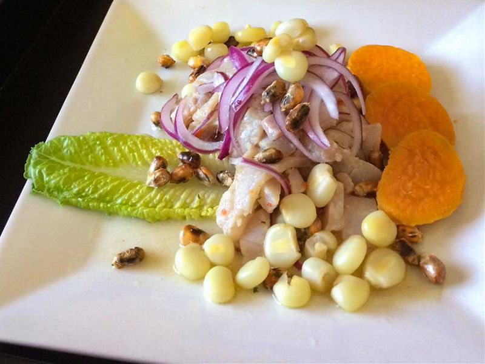

Ceviche Peruano

Description
This is a delicious ceviche tipically made in Peru.
Recipe retrieved from https://www.allrecipes.com/recipe/134464/ceviche-peruano/ .
Ingredients
- 2 potatoes;
- 2 sweet potatoes;
- 1 red onion, cut into thin strips;
- 1 cup fresh lime juice;
- ½ stalk celery, sliced;
- ¼ cup lightly packed cilantro leaves;
- 1 pinch ground cumin;
- 1 clove garlic, minced;
- 1 habanero pepper, seeded and minced;
- Salt and freshly ground pepper to taste;
- 1 pound fresh tilapia, cut into 1/2-inch pieces;
- 1 pound medium shrimp - peeled, deveined, and cut into 1/2-inch pieces;
- 1 bibb or Boston lettuce, separated into leaves.
Directions
- Place the potatoes and sweet potatoes in a saucepan and cover with water;
- Simmer until the potatoes are easily pierced with a fork, then drain, and set aside to cool to room temperature;
- Place the sliced onion in a bowl of warm water, let stand 10 minutes, then drain and set aside;
- Meanwhile, place the lime juice, celery, cilantro, and cumin into the bowl of a blender, and puree until smooth;
- Pour this mixture into a large glass bowl, and stir in the garlic and habanero pepper;
- Season with salt and pepper, then stir in the diced tilapia and shrimp;
- Set aside to marinate for an hour, stirring occasionally. The seafood is done once it turns firm and opaque;
- To serve, peel the potatoes and cut into slices;
- Stir the onions into the fish mixture;
- Line serving bowls with lettuce leaves;
- Spoon the ceviche with its juice into the bowls and garnish with slices of potato.